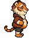
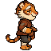
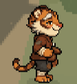
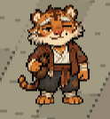

아타호 · 측면 볼륨 비교
원본과 첫 수정안 사이의 몸통 두께로 보완한 04입니다. 네 이미지를 같은 배율과 발 높이로 비교합니다.
원본 측면
수정 측면 · 01

정밀 보정 · 04

정면 기준

04는 원본의 얼굴·목·팔손·발·꼬리 도트를 유지하고 옷 외곽만 보완했습니다. 흰 털 추가 없이 기존 갈색으로 무료 편집했으며 네 장 모두 64×64 원본을 정수 배율로 표시합니다. 01은 얼굴과 발 색도 일부 달라진 이전 후보입니다. 현재는 외형 비교용입니다.
사용자가 보낸 게임 화면

